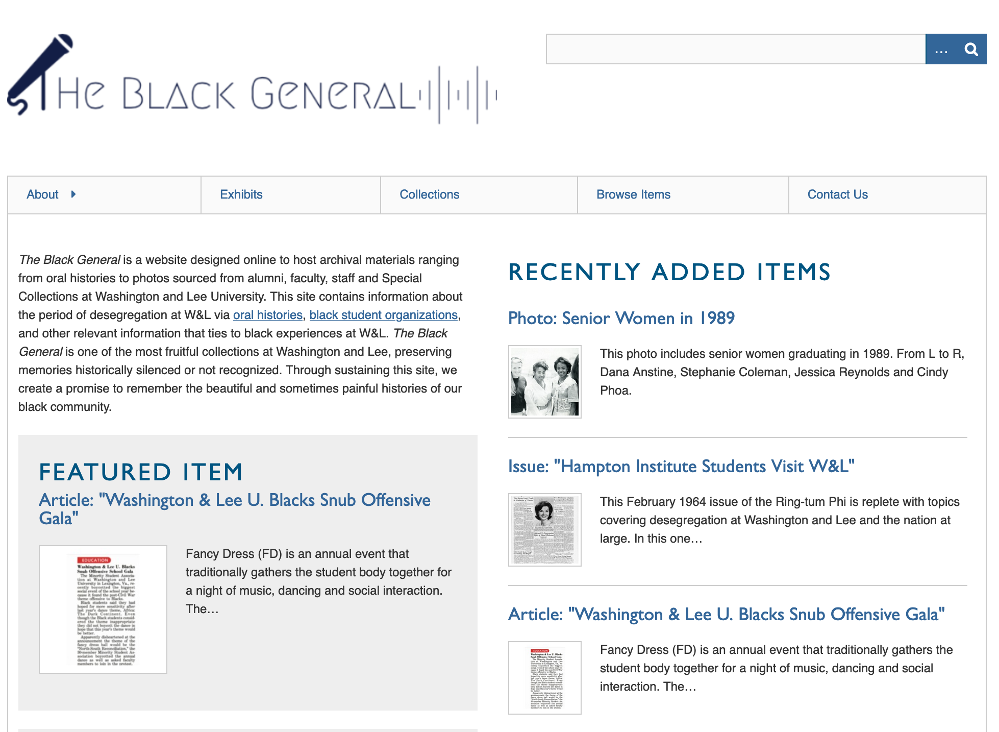
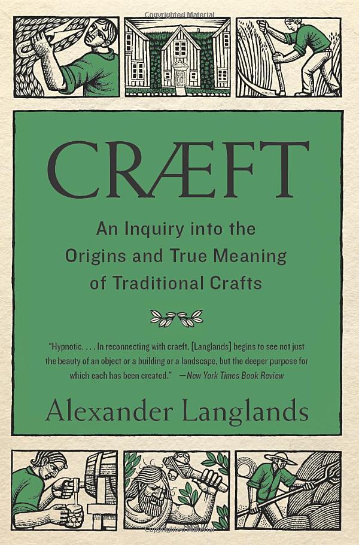
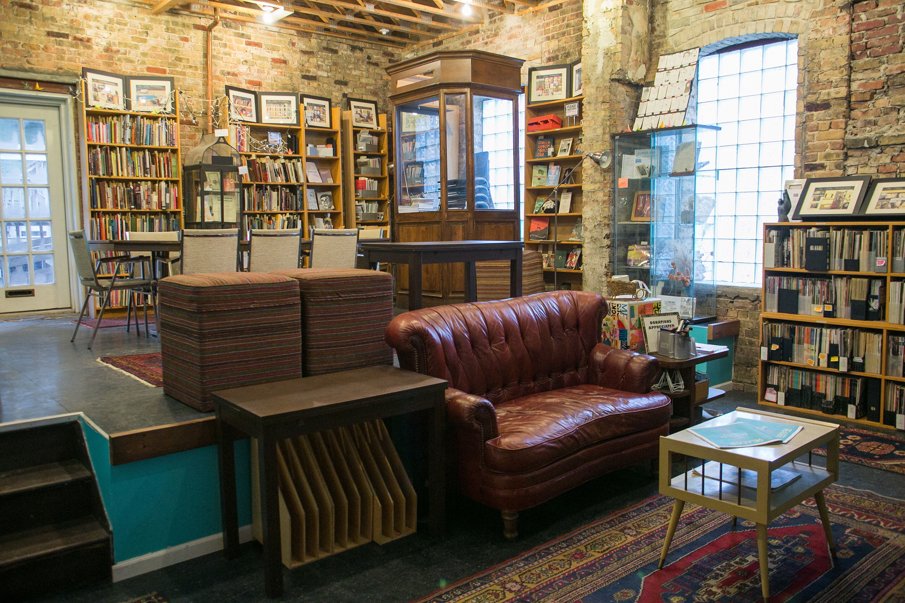
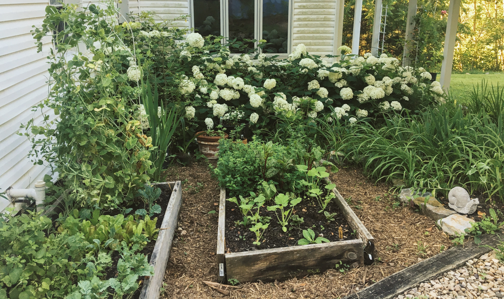

Maintenance & DH
EGMT 1510 // March 1, 2021
Mackenzie Brooks // Digital Humanities Librarian // W&L
what types of maintenance and repair take place on college campuses?
how do we care for projects and objects of study?
how do I help cultivate a regard for maintenance in my students?
- Library as Lab
- Digital Culture & Information /= DH
- but also: growing food and making clothes
part 1 library as lab
work with students, faculty, and staff to incorporate digital methods into their teaching and research


part 2 digital culture & information
DH /= DCI
- Designed to teach students concepts and methods that will enhance their academic success within any major.
- Gain significant experience with technological platforms, complex information resources, and visual design.
- Nurtures critical reflection on the underlying structure of information and not merely technical proficiency.
DCI courses
- Data in the Humanities
- Programming for Non-Programmers
- Black Mirrors & Digital Culture
- New Dark Age
part 3


Read/Write Library // Chicago, IL
